ingenoire's bonus content

Hi there!
I'm just a former PSO2 YouTuber, but I still play PSO2. My main presence outside of the fleet discord is on Twitter, where I tend to mostly upload PSO2 Screenshots and, eventually, will post progress on my game project.
Character Datas

TAMTWA Volume 1 Added 24/09
16 Outfits
Yvonne Added 21/09
Present, Oldest
Yvonne
Former-Present, Young Adult

Yvonne Added 21/09
Nonexistant Past
Cow Bikini Yvonne Added 21/09
Moo?
Yvonne
Cosy (adjusted sliders)
Yvonne
2023 Edition
Alternoire
2023 Edition
Avenue
PSO2 Screenshot Challenges Bot Mascot

NGS Headline (April Thirsty 2023)
Following last year's April Fools joke, a new April Fools joke video, with a special guest! It focuses on Idols and Weaponoids of all things.
Watch on YouTubeAfterthoughts
This video took less than a month, as I was planning the main ideas during the editing of the PSO2 Collabs History video (all thanks to taking down notes while at work).
I'm glad that I got it out on time, because it's a time-sensitive video: things would get weird if you throw April Fools jokes on April 2nd, right?
This video and the previous year's one were basically inspired by NotBelial, from the Heroes of the Storm community: every april fools, he had some of the most insanely good looking fakes. Every, single, time, everyone fell for it. I always wanted to try replicating that, but in video form. Easy to say, nowhere that easy, especially when I'm pretty bad at modelling (I tried).
Make a decision
— ingenoirePSO2 (@IngenoireP) March 6, 2023
Sometime in March, I put out a poll on Twitter for my followers to vote between Hiro Arain, the official NGS navigator, and... Masahiro Sakurai. I'm actually sorry to dissapoint, but it was always planned to have Sakurai for this video, but the poll did determine if he was going to be the director, or the Official NGS Navigator. Since Hiro Arai won, Hiro became Director, and Sakurai became the NGS Navigator.
In a very surprising moment, I actually got mentioned on the official PSO2 YouTube channel: during their April Fools joke for 2023, which also was a NGS Headline spoof (the 3rd one to my knowledge, alongside Hestiaworks' video and my own), one of the questions was literally:
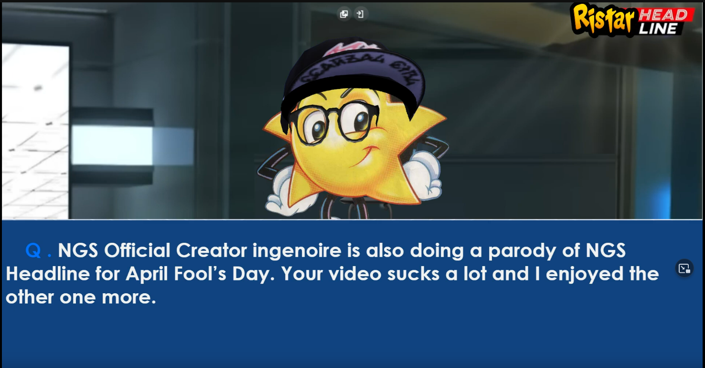
Genuinely surprising to see, but I'm glad my videos were able to inspire people, both in the community and at SEGA themselves.
Trivia
- Sechetyl CV was added thanks to Lat's suggestion.
- The "art" was done using NovelAi: this includes the cellphone pictures.
- I was planning on making the "Phantasy Star bosses return" segment of the trailer longer, but the Deus Esca portion being a bit jank to work with, and the lack of time, killed that idea quickly. I really wanted Phantasy Star Portable 2's final boss in there too.
- The Idols had english lines at first, with about half of them done. But I did hit a snag when you realize that Voicemaker... has like one really good female voice, and the rest are kinda ehh.
- The idea of having idols being the villains came very early on: with how much idol culture, VTubers, etc, are relevant today, it wouldn't be out of place to be honest, especially with the enemies being called "DOLLS": dolls, toys, dollhouse... get it?
- Obsidia was mostly based on Yvonne's outfit.
- The idol names where taken from a list of female japanese names and meanings site. I literally forgot their names.
- The Weaponoid stat screen and systems are pretty much Blue Archive.
- Speaking of, I got very lazy and didn't bother editing the multi-weapons for the other weapons. I got even lazier and just blurred the Potentials for the weapons other than Obsidia.
- The Dollmasters logo is based off the Idolmasters logo. I named it such because it was a clever pun on the Dolls, and they're their masters... get it? Ahaha...
- The place where the Elf Idol does her concert in the video requires using Sword PAs to climb up (maybe gliding from afar works).
- Originally the mobile segment was supposed to be a "PSO2 in real life" thing, with photoshopped PSO2 characters IRL. Never went forward with the idea, dunno why.
- I intended to record more "QOL" features for the trailer segment, but too little time on screen, for too much effort.
- The Genecoin in 3D was made with Coin Creator with My Photo
- To make sure the background image behind Sakurai looked alright, I had to add a special background. Here's the picture:
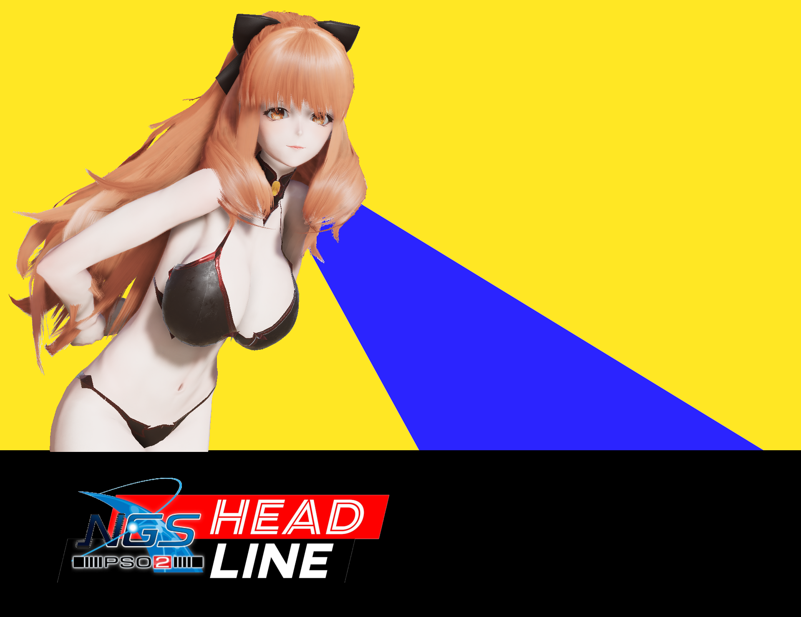
Character Datas

Primm
Weaponoid

Obsidia
Weaponoid

Sechetyl CV
Weaponoid

Gunblaze
Weaponoid

Cinquem
Weaponoid

Tomboy Idol
Idol
Cyber Idol
Idol
Ojou Idol
Idol
Rock Idol
Idol
School Idol
Idol

Yandere Idol
Idol

Elf Idol
Idol

The History of PSO2 Collabs
My longest video ever, covering all the in-game collaboration events of all sorts for PSO2, from 2012 to 2021, the year that NGS released.
Watch on YouTubeAfterthoughts
This video was literally not planned: like, at all. It all started when I wanted to make a critique of NGS' EPISODE 1 (which June 2021-June 2023 most likely is): the problem is that Chapter 5 wasn't released (and not even Dark Falz Aegis). And so, in a spur of the moment notice, I just blurted out on Twitter:
I think I'll put on hold the EP1 overview until df aegis comes out,
— ingenoirePSO2 (@IngenoireP) January 3, 2023
In the mean time, I think I'll work on another long form video. Had the idea to chronicle every pso2 classic collaboration in JP, but who knows what will come out.
Twitter just my rubber ducky.
And then it sent me down a spiral of madness. The video ended up not only taking two entire months of non-stop week-end grinds, not only becoming an absurdly long two hours, but it also was riddled with so many secretive/hard to find collabs (at least on english sites, wish I knew about the collabs page on swiki sooner). At least I took the right decision in focusing on "in-game collabs" only.
What? You thought I was talking about JUST the collabs being secretive? Yeah, right: so many collabs that weren't simple anime/game AC Scratch collabs, had some sort of borderline insane story to tell, that I didn't even have the time to mention them all. I guess that's what people call "Culture Shock", huh?
And that's not all! When you start editing long videos like that, you realize that video editing software really, REALLY, doesn't like that, and especially hates it when there's 3 million different cuts here and there. Thankfully, it forced me to learn about the "Multiple Films in Project" trick, which allows me to edit different segments as seperate films, but allows for copy/pasting between films.
This did result in having to export each film seperately, and then stitching them together in a final export.
During the development of the video, I got suggested several times to release it in seperate parts, and I understood the reason why: it's easier to edit, and you get to release something more frequently, and on top of that, you could export a full version later on for even more views!
But, I was adamant about not releasing it in different parts, because, as a viewer, I hate waiting for parts (unless said parts are hours long). If a video comes out, I want it to be the full thing, not something that's partially complete.
In any case, despite the weird hiccups here and there, and the lack of things to say during the simple AC Scratches, I'm pretty proud of this massive video.
Trivia
- The video's structure was modelled like LS Mark's "Watching EVERY" series of long videos.
- The video did enable my channel to get monetized! \o/
But this happened AFTER the initial views happened, so right now, the video is in a weird situation where it generated less ad revenue compared to my recent April Fools video. - From the start, there wasn't supposed to be any direct visual appearance of Yvonne. But the lack of footage to fill a lot of air time did result in me adding some Yvonne footage. But as a result of that, I hastily made several different outfits exclusively for the collabs she'd appear in.
This did result in a lot of unused footage, including one for the SAO portion, where I had summoned the NPCs. - I was very close to forgetting about the Sword Art Online collab.
- I only found out about the ZOIDS collaboration while browsing Dengeki, while I was searching for more details on the Dengeki Festival.
- Sweets Paradise was the most tedious segment to edit.
- The MS Paint segments weren't intended to be seen as is: I was kinda expecting to throw that in AI, but these had too much charm not to use as is, especially since it emphasizes absurdity.
- Virtual-On took the longest to just... finish up. This is because I kept trying (and failed) to explain the absudity of A Certain Magical Virtual-On. I just couldn't find the words to explain the absurdity, and the voice couldn't really get that "kenny lauredale" vibe, as in "i'm explaining the most absurd anime ever that no one has talked about".
- I wanted to find a way to mention the Skies of Arcadia Music CDs, but I forgot. (Please SoA, bring us SoA Music CDs to PSO2 Global, thanks)
- I was very close to scrapping the entire video when I got to the Phantasy Star Universe segment. Yes, that was the second segment of the video.
- At a certain point, the video editing software just refused to import music from already used albums, citing "corrupt metadata". This is why I had to pull some Etrian Odyssey music and other ATLUS tracks.
- Due to changing the voice pitch sometime after generating the voicelines, the first two years were revoiced in their entirety.
I was going to insert some costumes made for the video... but then I completely forgot that I... didn't backup a single outfit. Oh well!
Alternoire's Concert - Ignite Infinity & Dream Dreams
On the eve of Christmas (kinda), Alternoire would sing in a video concert two classic SEGA songs!
Watch on YouTubeAfterthoughts
I wanted to make a special Christmas/New Years present : as I wanted to redo PSO2mas, but in a different format, from September I was trying to make a visual novel.
If you knew about my past self prior to pso2, you'll know that I can't finish making a game. As a result, 3 months went down the drain, and in December, I had the idea to make a concert video. Nadereh never had that same charm Quna had, so I wanted to replicate the experience within NGS.
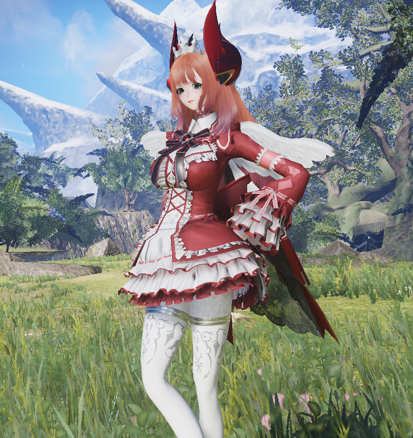
Originally, it was going to be Yvonne with a special dress. It started out as a version of her outfit with tons of ribbons, but that did horribly with the dancing, physics wise. As I experimented with outfits, I ended up finding an outfit that looked nice, but… the hair didn't feel right. At the time, Yvonne mainly used Lapine Hair, but it's not exactly a hairstyle that has an distinct silhouette for singing. Too vanilla. Also, the orange hair clashed quite a bit.
When trying out different hair colours, I initially tried going for light pink, but it looked generic. When I went for blue… that's when Alternoire came to mind.
Alternoire’s breast spikes ended up being a perfect compliment to the look. This also helped give Alternoire a more distinctive look and feel compared to Yvonne, with Yvonne being royalty, and alternoire being more free spirit. Law and chaos ?
Recording was a nightmare, however: without photo room cities, I had to be prepared to record as much footage as possible during the night time, which is shorter than day time. Every dance emote needed different lip-syncs, camera angles, and general framing, which resulted in at least 10 different in-game nights required to get all the footage (if not more)...
My first Livestream Experience
Oh, and we can't forget about the Livestream! I designed the concert first, then I had to add some automatic macros in OBS, create some wait time footage, and add a special chat bubble system to replicate the Symbol Arts spamming from PSO2!The initial... test streams, to check if the chat system even worked... were nerve wracking. StreamElements doesn't like Youtube one bit, and it's prone to simply going silent. The last test day was a failure if I recall, and on the day itself, I just prayed it'd work. I even gave myself 30 minutes prior to the start of the actual concert. But thankfully, it worked on the day!
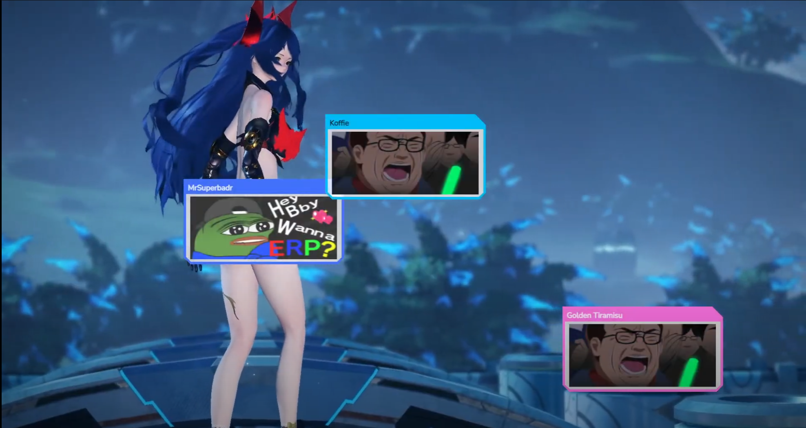
A lot of people on stream loved using the Symbol Arts on stream, and we had some funny moments as a result of the... tactical positioning of the Symbol Arts. In any case, if I were to ever livestream again, you bet that I'll expand on it and add some more SAs to use!
Chat Bubbles with Symbol Arts Code
The original code for the stream chat was done by Zaytri, however, to create the Symbol Arts, I had to hack it up a bit.
It is only designed for StreamElements.
You'll first need to obtain the original chat bubbles, the link being in their Youtube video description. Then, click on the Edit button from StreamElements. Expand the Settings folder under the Bubbles layer, and press "Open Editor".
Grab the hacked version of the code over on my Github, then at the bare minimum, override the text in the JS tab with the contents of the js.js file on Github.
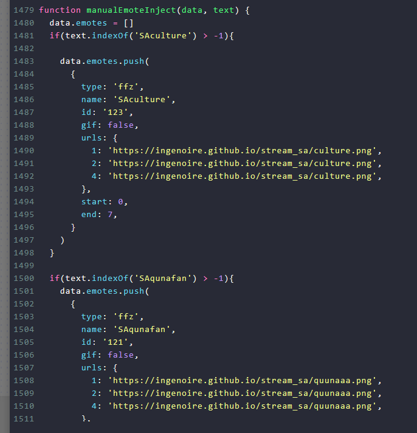
At the very bottom of the JavaScript file is the list of custom Symbol Arts. The main magic is in the manualEmoteInject function. Each block of code that starts with "if (text.indexOf('SANAMEHERE') > -1)" corresponds to a single Symbol Art. Simply replace the SANAMEHERE with the name you want chat to use to refer to your SA, and replace the three URLs with a direct link to a picture. Now just give it a test by forcing a test message with the SA codeword as the text, and normally it should work!
There even is a special toge sound and filter, which can be activated by writing toge alongside the message, but it can't support the / due to limitations.
These edits were done with YouTube in mind, so it will work on YouTube. I'm not sure how Twitch would handle it, but outside of personal tweaks, it should be fine! Any PSO2 streamer, please give it a try!
Trivia
- The initial stage was going to be in Lower Maquead’s highest tower.
- The original song was supposed to be the English Credits theme, "Though I Cry, I'm Happy Inside", from TREASURE's Silhouette Mirage. Other songs considered included "Borderless" from PSO2, and "Endless Possiblities" from Sonic Unleashed.
- I had to buy at least 5 additional dance emotes from the Player Shops during the recording: this included shelling out some real money for that limited time Vocal Performance 13 bundle.
- The lights behind Alternoire are premium lights: since they exist in the world, they reflect light when near walls and floors, thus, giving the stage light effect.
- There was no "Log Out" emote at the time, so I had to use Dark Falz Warp to exit the stage, unfortunately.
- During the Dreams Dreams segment, Yvonne was supposed to reappear, overseeing from above, but in a Nights-like outfit. It did kill the flow of the movement though, so it got cut.
Character Datas
Alternoire (Concert)
Dream on!
Alternoire (Torn Jacket)
Used during the 15 minute wait period cutscenes.
Yvonne (Christmas)
Used during the 15 minute wait period cutscenes.

Yvonne (Nights, Unused)
Cut from the video.
The Cancelled Christmas Visual Novel
A series of cancelled Christmas Visual Novels made in Ren'Py, bit of an untold story.
Check the source code out on GitHub!What's this?
Believe it or not, Christmas 22 was not supposed to have Alternoire's Concert: it was supposed to be a PSO2 Visual Novel! The development started around September 2022, and it went through 3 different phase:
Christmas Future Story
OK...
— ingenoirePSO2 (@IngenoireP) September 17, 2022
What if NGSmas was instead a Visual Novel?
If it goes somewhere, I *might* ask for some cameos from people in the community... #PSO2NGS pic.twitter.com/QpEUJ2Vbxi
The first story was one involving Yvonne and Alternoire meeting their future selves during Christmas. The idea was to pass pso2mas with some interesting ngs observations as "episodes" of this visual novel: for example, one episode focused around overflow/underflow integers, a common bug in NGS (for some reason), but it was integrated as part of the ongoing plot.
The unique thing about it (and also it's flaw), was that each episode would release on a daily basis, with 24 short segments, 1 per day. But outside of my lack of programming prowess to create something like that, it would also lead to people just... waiting for the full thing to be out. Most likely.
Another issue I had was that it focused a bit too much on my characters. Sure, it's nice to see Yvonne and Alternoire, but when that's the only thing you'd be seeing for the entire thing, that's tiring, both for the audience and for myself. Afterall, a Visual Novel has a player, so it would be better if the player was integrated to the story. As a result, it led me to the second iteration.
Gameshow
The second iteration of the visual novel would focus on the player. In this version, Yvonne would be relegated to the Gameshow Host, who only appeared at the start and the end of the show... in theory.Whenever I'll have some spare time I might throw a few unique reactions if you submit specific names. pic.twitter.com/4yW5WZh7r8
— ingenoirePSO2 (@IngenoireP) September 25, 2022
I wanted to have different "short stories", with each one being completely disconnected from one another. The goal was simple: resolve the problem presented in the short stories you'll be randomly assigned for that run. They were designed to be linear stories, but the way you can affect them was based on your main class and sub class that you'd choose at the start of the run.
Each playthrough was meant to be short, and every story was going to be randomly selected. What's even cooler (in theory), was that "random" characters would appear to take on the designated roles for each scenario. Basically, I could create "character files", that would have a character (say Alternoire), with a link to their frames, and a list of roles the character was allowed to take on, on top of unique wording for specific story scenarios. This was my idea to have anyone become a cameo within the visual novel, as since character files were seperate from the main story files, one could in theory mod the game with their own characters and make it seem like they're one of the random characters...
...do you see why I never finish development on... anything?
Needless to say, this idea crumbled under it's own over ambition. Oh, and by the way, I'm also terrible at writing stories.
The Dark Falz Dating Sim
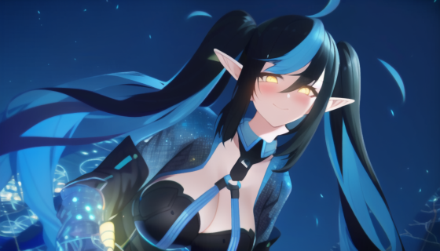 Alright, December is fast approaching. What's the best way to make a visual novel? Well, to keep it simple: dating sim. And one with an intriguing premise: dating Dark Falz (Eradi).
Using the N-V-Arkers video as a basis for this story, a very angry Crawford, who already is furious that his central cannon grew legs and ran for the hills, has to deal with Dark Falz, but everyone's been falling in love with her the minute they staged a counterattack. You are the latest ARKS Defender drafted into fighting Eradi.
But it's a bit more complicated, because the goal isn't to fall in love: that's her goal with you. Your task, as given by a very angry looking crawford, was to break her heart. The task isn't so simple however, as a special effect surrounds her domain, preventing you from actually being mean.
The structure did reuse a few things from the Gameshow: in addition to retaining the main/sub class system that determines your choices, the structure of the dating sim was also randomized, although nowhere near as complicated as before.
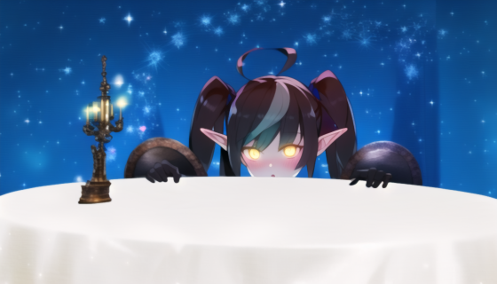
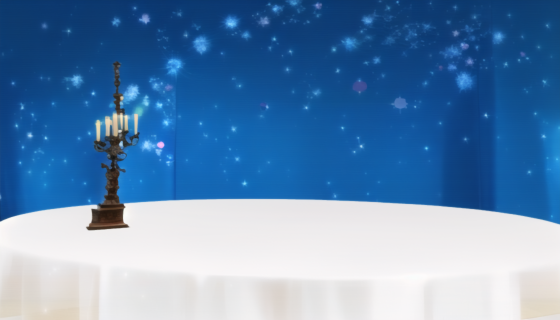
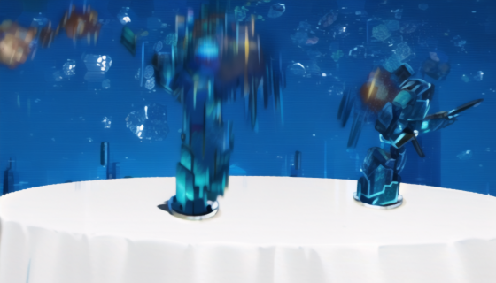
Essentially, each phase of the Dark Falz Interception Urgent Quest (not the R2 trigger) was turned into dating sim ""attacks"" (aka scenarios), which were randomized in order per phase. Failing to deal enough "love damage" to Eradi, would result in the player succumbing to the effects of the area and becoming fully faithful to Eradi, never to be seen by ARKS ever again.
A lot of photoshop pictures, turned into AI Art, would make the VN's art slides, and it wasn't really intended to use the standard portraits. Just before it got cancelled, nearly all the scenarios meant for the first phase (before ceiling break) were added, only missing a break phase event and the wipe attack that contains you in a bubble.
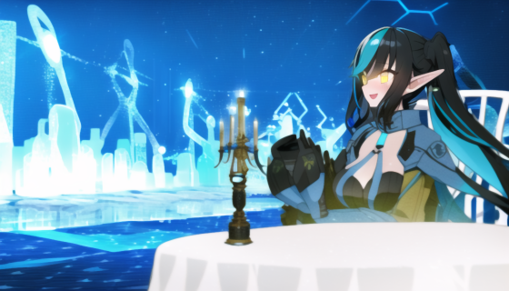
The project kinda got killed off when I realized that I... have no writing talent. If you wish to use the code for your own projects, feel free to check out the GitHub (built on Renpy). The code is currently set at the last version of the Dark Falz Visual Novel, but it should be possible to check back on previous commits and find the other two versions of the Visual Novel.
I learned a lot through this.
Trivia
- What was planned for the wipe phase of the Eradi VN and beyond; you'd fall in a coma, enter a fever dream, and if you broke free, you'd wake up on an absurdly huge bed, where Eradi was supposed to engage in the red phase (with the ceiling broken and stuff) after you woke up, fearing you didn't like her. It was intended to be a bit more... suggestive, and it was meant to reflect how phase 2 of the fight had dark falz walking/crawling on the ground. No CG was made, but it didn't feel quite right to do, and the VN was cancelled soon after anyway.
- The Gameshow had a default Yvonne character that was only supposed to be used if no other characters matched the requirements for the scenario. But because it was pretty much the only character with a file... she was pretty much dressing up in a ton of different outfits.
- Crawford's portrait was supposed to have a cigar to emphasize the edge, but the AI wasn't very good at making a cigar.

The Mapping Errors of PSO2 NGS
When there's a strange artefact, you don't think too much of it. When you start seeing patterns, yeah, that's a bit worrying.
Watch on YouTubeAfterthoughts
This video came about because I was feeling crazy: surely, people were noticing the weird geometry, right? Right?
I had a bunch of footage, but not really a story to tell. So I had to find a way to chain each error between each other. It's just one of those spur of the moment videos.
To this day, the grass floating in South Aelio is genuinely the thing I hate the most. I swear that the grass was better during the CBT, but they must have edited the terrain a bit, but forgot to adjust the grass accordingly. But seeing how nobody cares about Aelio for a year and a half now...
Trivia
- The water gap in South Aelio got fixed.
- The textureless floor in West Aelio is still there.
- They finally covered up the ugly texture stretch near the Meteorn pod with some extra rocks.
- Kvaris is still an ugly place.
NovelAI & PSO2: An Overview Guide
An early look into the world of Image to Image AI Art Generation for PSO2 pictures. A lot of this info doesn't reflect current trends anymore...
Watch on YouTubeAfterthoughts
The NovelAI episode... proved to be quite successful... with an audience interested in AI art. Most of the views came from YouTube search, with people searching for AI Art tutorials, as the whole concept was gaining traction. This overshadowed the PSO2 audience, which was quite rare for videos of mine.
Several different scenarios were done to see how far I could take it. This included lots of Photoshop collages to see if it could create entire scenes.
Something I wasn't planning, but got inspired to do after the video, was a dakimakura. As even after the video was done, I was still experimenting with ideas, but this one was less easily said than done. Unless you've got access to the models themselves, the only way I could get a bodypillow pose, was to sticth together the top part of a Jumping emote, and the legs of the Tetra emote. This lead to me just being lazy for the other poses.
Don't even get me started on the lewd side, since the only way you could get high quality innerwear images was the Salon. And the Salon restricts a lot of the camera and emotes you can use, and I had to mess with chroma key shaders to get it done.
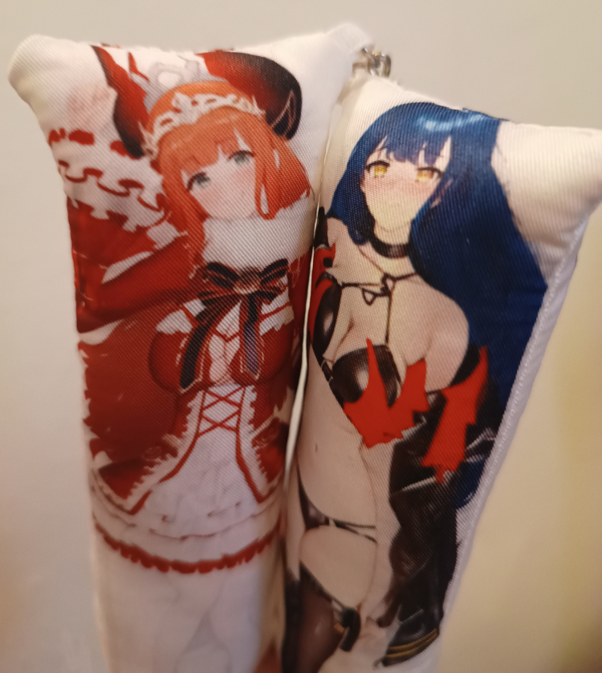
And yes, I did eventually export the work into actual dakimakura... keychains! There's no way I'd be able to order a real sized dakimakura (for my sanity, and for my social reputation). But if I did have to order one, I'd probably order the largest one. Diipoo is rather good, so if you ever felt like making your own dakimakura, with some Photoshop and AI, it's possible.
Another thing post-video was... a VTuber model! This one was also a pain to make, and I ended up learning the basics of VTuber Rigging through Live2D. Several different images had to be stitched together, AI'd seperately, then restitched together. You'll notice there's a missing ribbon, but I didn't feel like working on it forever. One day, I'll use this for a gag, but I'm never sure when.
AI Art has gone quite far since this episode. Most people use it on their own computers, with the custom things like controlnet and such. NovelAI recently got high resolution exports, and ControlNet very recently.So I guess it's perfectly doable to make a VTuber through AI with a PSO2 character.#PSO2 #NovelAI #AIart pic.twitter.com/WOm1xUvZB3
— ingenoirePSO2 (@IngenoireP) November 13, 2022
If you were curious where all my AI Art went on Twitter, I mostly keep them on Fleet Discord's AI Art Forum Thread. I don't have an active subscription to NovelAI for now, and setting up the local StableDiffusion is annoying.
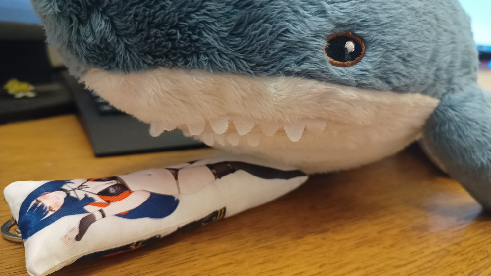
Trivia
- Random AI art generations without any PSO2 pics did lead me to make outfits based on the AI result.
- I think I wasted about 10€ worth of the NovelAi Anlas (the thing you use to create images) just to make the pictures created specifically for the video, including the mugshots and examples.
AI-Generated... Stuff?

Yvonne VTuber Model
A very primitive VTuber model, but the art was generated through AI. The rigging was self-made though. It is based off the 2022 version of Yvonne.
Yvonne Dakimakura
Contains a zip with a front, a safe back, and a lewd back. Based off the 2022 version of Yvonne.

Alternoire Dakimakura
Contains a zip with a front, a safe back, and a lewd back. Based off the 2022 version of Alternoire.
N-V-Arkers: NGS VTuber Agency
A machinima focusing on VTubers... based off NGS... things!
Watch on YouTubeAfterthoughts
When the hololive collaboration was announced, I immediately thought: "hmm, they sure make VTubers out of anything these days", and had an urge to start making VTubers, just out of the blue, joking around about questions like "what if Dark Falz was a VTuber? Or Central Cannon, Crawford's beloved? Or the Trial Truck? What personalities would they have? What games would they play?"
The magic behind the chat was a website that simulates twitch chat, and the code was available on GitHub. So I edited it, and then created separate chat profiles for each event. This also supported custom emotes, so I made a few related to the characters in question. The chat is thirsty af though, mainly because I'm not exactly sure what people even write during stream when it isn't in relation to active commentary.
Trivia
- This is the one time I used the aggressive tone for Yvonne. As you could tell, it's not that great sound wise.
- Giga Nogleth wasn’t supposed to outright murder two vtubers on screen. It just happened to end up like that.
- The ending was cut short because I wanted to capitalize on the maintenance hours, and to get it out before the scratch launched. As a result, the ending was cut short, at it stopped at a very unfortunate timing. The extended ending was then released later on, with a bit more effort then what was going to be a few seconds for joke.
- The vidalun VTuber was created as a Waifu for Kean, the meme tank. I think he's been cheating on her lately...
- Speaking of Kean, the smile was just done with a deform tool, and I just saved several different frames.
- If you pay attention to the chat usernames, you might notice some familiar names... kind of. Usernames are generated by assembling two words from two different lists together, and I threw in a few names of some people in PSO2... cut in half. For the most part.
- All the chat messages were hand written... sadly.
- Following the release of the video, I wanted to do a "making of" of the video, and said video was to be presented like a livestream (but it wasn't actually one).
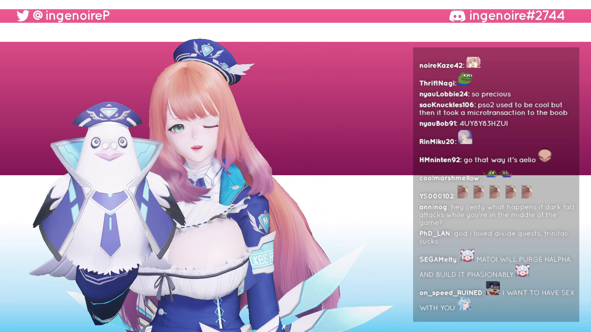
I even made a stream interface! - Another idea for the making of idea, was to have Yvonne be represented by... a VTuber!... another one! As in, in the lore... that's basically the Character Data down there that's labelled as unused. This didn't go too far before abandonning the whole making of concept.
Character Datas
Centy
Central Cannon VTuber
Centy V2
Central Cannon VTuber (created after the video)
Eradi
Dark Falz VTuber
Horobiru
Aelio Town VTuber
Melty
Meltius VTuber
Mekuramashi
Leciel VTuber
Eradi (Casual)
Eradi but Casual VTuber
Nagi
Gigantix Nogleth VTuber
Megumarotari
Otarica VTuber
Yuuki
Purple Dog VTuber
Amongusia
Red Box VTuber
Mise Tenin
Kvaris Shop Robot VTuber

Lobbie
Truck VTuber
Infinite Meme Tank! Kean LOVE! Is it wrong to focus sorely on HP and Damage Resistance in a game where the meta is DPS?
Vidalun Armor VTuber
Cosplays
Yvonne
2022 Edition
Essex
Azur Lane

Yomi
Senran Kagura
Ara
Elsword
Sorceress
Dragon's Crown

Sage
Sonic Frontiers

Sonic Suit
Sonic

D.Va
Overwatch
Gullveig
Fire Emblem Heroes
Afterthoughts
You can blame the entire existence of this video to bumped.
Originally, it was supposed to be presented like an actual medical physical exam: however, it didn't flow well, and felt very contrived. Not to mention, the lack of medical settings in both games, even in the Personal Quarters, and the little there is, didn't make for a good background.
At the suggestion of someone on fleet discord, I shifted the focus towards something closer in style to a Linus Tech Tips video. Although, initially it was more framed as if it were a high-tech product review, with S2 being represented as the Yamato ceiling lamp, spec sheets popping on screen, and even a "linus drops things" kind of joke with the S2 ship. I was really proud of the effect, with a mixture of green screen, shake, etc, but I didn't export the result sadly.
The Linus Tech Tips approach was kept, but it focused way less on trying to make it sound like a Linus Tech Tips video. Yvonne's outfit was designed to look like some random shirt with silly text on it, something that screams LTT (but not quite), and an LTT like office space was built for this video.
Trivia
- There were supposed to be a few cut aways from the barrage of slides near the second half of the video, to keep things a bit different. But deviating from the slides was going to slow the pace down, so the slides remained united.
- I bought three different alt character slots, for each ship, specifically for this video. The multi-ship idea was quickly dropped, however, the minute I started doing S2. And the fact that I didn't feel like grinding each character's level to reach Kvaris.
Downloads
Survey Data
This is the excel that contained all the data gathered for this survey.